Preparar
As garrafas são coletadas, higienizadas e preparadas para o corte em filetes.
SUSTENTABILIDADE + IMPRESSÃO 3D + ACESSIBILIDADE
De uma conversa espontânea nasceu uma pesquisa: transformar garrafas PET em filamentos para impressão 3D e investigar novas possibilidades para a tecnologia assistiva.
Um projeto de pesquisa com Laura Helena de Melo Passoni
Pesquisa realizada integralmente no LCRGS
FCT/Unesp · Presidente Prudente, SP
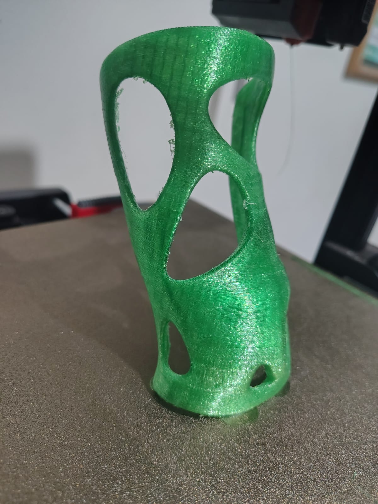
01 / ONDE TUDO COMEÇOU
Uma conversa espontânea.
Um caminho de pesquisa.
Uma conversa espontânea foi o ponto de partida. Depois vieram as garrafas, a extrusora, os primeiros filamentos e uma sequência de experimentos.
A pesquisa inteira foi realizada no LCRGS, na FCT/Unesp, em Presidente Prudente. Ali, a ideia ganhou forma no trabalho com as garrafas, na produção dos filamentos e nos testes para compreender o material.
Uma extrusora baseada no projeto PETmachine, da Tylman Design, permitiu transformar filetes de garrafas em filamento. Os primeiros testes de impressão deram lugar a novas investigações e, depois, à produção de um protótipo de órtese.
Esse percurso aproxima o reaproveitamento de resíduos plásticos da pesquisa em tecnologia assistiva: investigar o que uma garrafa pode se tornar e quais aplicações esse material pode oferecer.
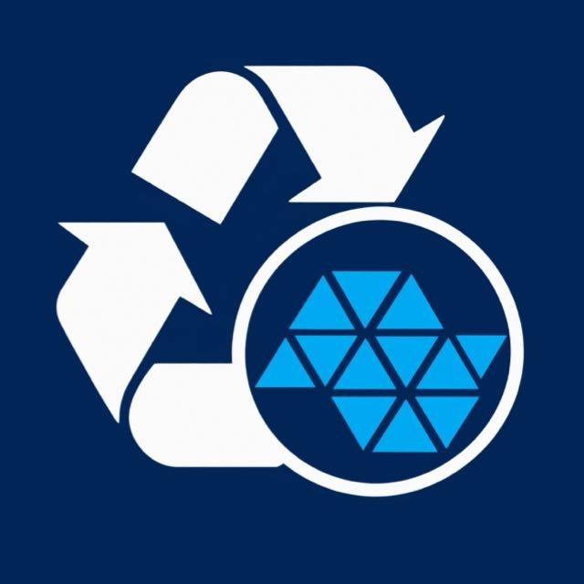
O LUGAR DESSA HISTÓRIALCRGSToda a pesquisa, da ideia aos experimentos.
02 / A TRANSFORMAÇÃO
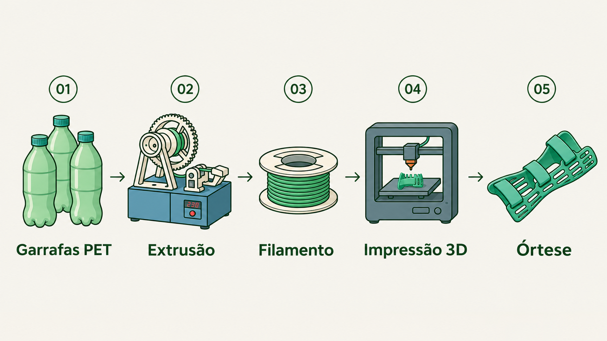
As garrafas são coletadas, higienizadas e preparadas para o corte em filetes.
Os filetes passam pelo bloco de aquecimento da extrusora para formar o filamento.
O filamento é usado na impressão 3D por deposição de material fundido, conhecida como FDM.
Ensaios mecânicos e análises térmicas e estruturais ajudam a avaliar o material produzido.
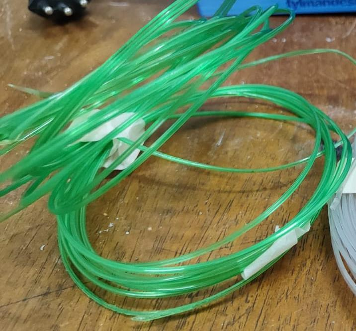
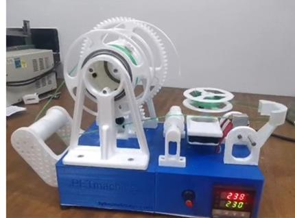
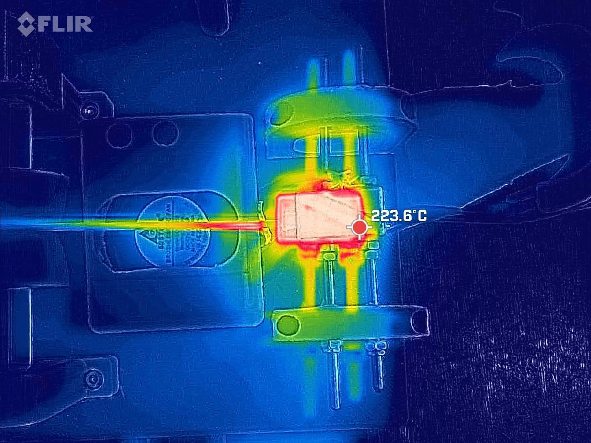
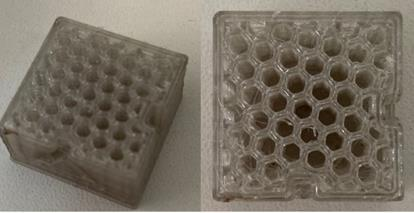
DO FILAMENTO À APLICAÇÃO
Esta órtese foi produzida em parceria com o MAO3D, da UNIFESP.
O filamento de PET reciclado ganha forma na impressão 3D. A peça aproxima o trabalho com o material de uma das aplicações investigadas pelo projeto: a tecnologia assistiva.
A pesquisa realizada no LCRGS se conecta, assim, à colaboração com o MAO3D para a produção da órtese.
Protótipo de pesquisa produzido com filamento de PET reciclado.
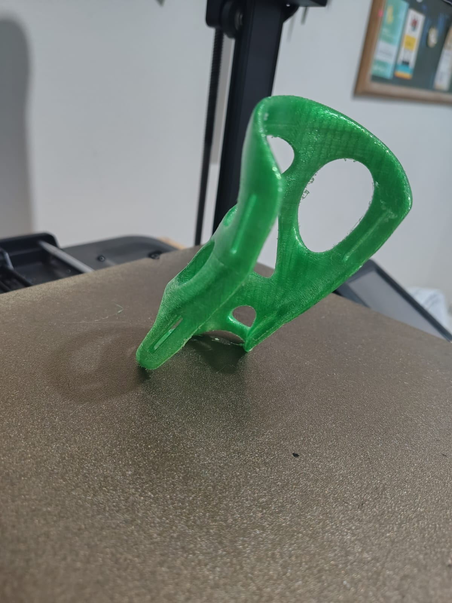
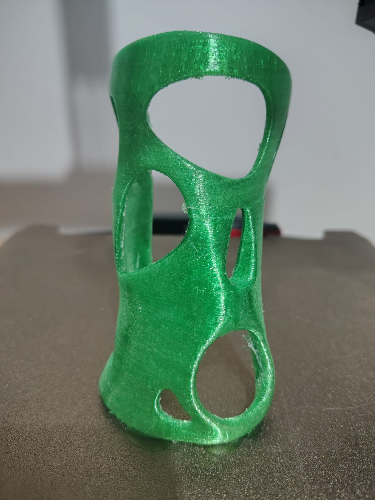
NOVO CAPÍTULO / EM DESENVOLVIMENTO
Impressão em andamentoHoje, um novo modelo começa a ganhar forma na impressora 3D.
Estou imprimindo uma prótese de mão a partir do modelo e-NABLE Phoenix Hand v3. Esta seção vai acompanhar o processo, da impressão das peças à montagem.
As fotos e os detalhes de fabricação serão acrescentados conforme o trabalho avançar.
Registro de início da impressão: 2 de novembro de 2026. Projeto em desenvolvimento.
DIÁRIO DE PRODUÇÃO
A primeira foto entra aqui.
Um espaço para acompanhar a peça real, ainda em produção.03 / A PESQUISA EM MOVIMENTO
A primeira etapa registrou a produção de 500 g de filamento e a impressão de um cubo de calibração. O trabalho foi apresentado no XXXVI Congresso de Iniciação Científica da Unesp.
Leia o resumo de 2024 (PDF) ↗A pesquisa avançou para ensaios de tração e flexão e análises térmicas e estruturais. Também foi impresso um modelo de órtese com PET reciclado, como corpo de prova funcional. Os materiais registram trabalhos no CIC Unesp e na SBPMat.
Leia o resumo do CIC 2025 (PDF) ↗A PESQUISA PARA ALÉM DO LABORATÓRIO
Congressos e encontros que fazem parte da trajetória do projeto.
1ª fase · Apresentação do trabalho
Reutilização de garrafas PET na produção de ecofilamentos para impressão 3D de dispositivos de tecnologia assistiva.
2ª fase · Apresentação do trabalho
A pesquisa sobre a produção de ecofilamentos participou também da segunda fase do congresso.
Apresentação em pôster
Study and characterization of recycled PET for sustainable 3D printing applications.
1ª fase · Apresentação do trabalho
Produção e caracterização de filamentos sustentáveis de PET: um avanço em engenharia de materiais aplicada à tecnologia assistiva.
2ª fase · Registro na programação
Apresentação oral do trabalho sobre produção e caracterização de filamentos sustentáveis de PET, registrada para 12h10–12h20.
Para a 2ª fase do CIC 2025, o documento disponível é o registro na programação da apresentação oral.
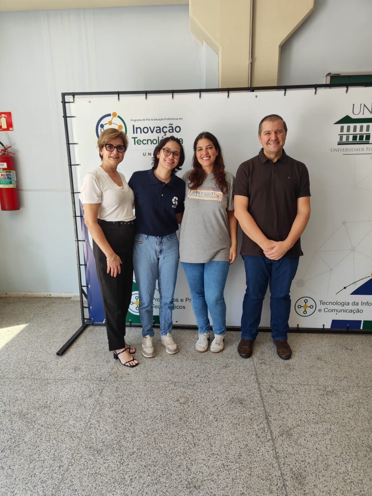
UMA NOVA ETAPA / PARCERIA
A parceria mais recente do projeto é com o laboratório de Tecnologia de Polímeros e Biopolímeros (TecPBio), da UNIFESP.
Essa aproximação passa a fazer parte de uma história que começou com uma conversa espontânea e foi desenvolvida no LCRGS.
Uma nova parceria na trajetória do projeto, que se soma à colaboração com o MAO3D na produção da órtese.
04 / CIÊNCIA SE FAZ EM EQUIPE
COLABORADORES
Toda a pesquisa foi realizada no LCRGS, na FCT/Unesp, campus de Presidente Prudente. O trabalho contou com apoio de iniciação científica do programa PIBITI/CNPq. A órtese foi produzida em parceria com o MAO3D, da UNIFESP.
A extrusora foi construída com base no projeto PETmachine · Tylman Design. Textos e imagens desta página foram organizados a partir dos materiais de pesquisa de 2024 e 2025.
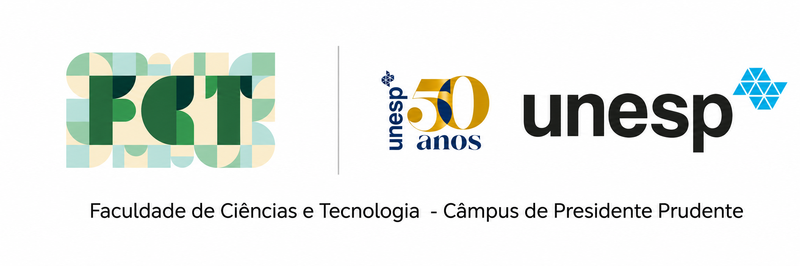
SOBRE MIM
Sou Laura Helena de Melo Passoni, mestranda em Ciência e Tecnologia de Materiais no POSMAT.
Minha pesquisa é voltada ao desenvolvimento de materiais sustentáveis para manufatura aditiva, com ênfase no reaproveitamento de PET pós-consumo para produzir filamentos de impressão 3D.
Minha formação reúne Física, Design Gráfico e Mecatrônica. Minha trajetória inclui a participação no MAO3D e no Projeto Hígia, da Unifesp, além da pesquisa com PET reciclado no LCRGS.
Conheça meu currículo Lattes ↗FORMAÇÃO
POSMAT · em andamento
FCT/Unesp · Presidente Prudente
Universidade Anhembi Morumbi
ETEP · Escola Técnica Professor Everardo Passos
2020 / IMPRESSÃO 3D EM AÇÃO
Durante a pandemia de Covid-19, participei do Projeto Hígia, ligado à Unifesp, na produção de protetores faciais por impressão 3D.
Essa experiência faz parte da minha trajetória com a tecnologia. Em 2020, apareci em uma reportagem da DW mostrando um dos protetores produzidos.
Hoje, a pesquisa com garrafas PET e tecnologia assistiva acrescenta outro capítulo a esse percurso.
Leia a reportagem na DW ↗Da ciência à indústria, brasileiros se mobilizam contra pandemia · DW · 2020
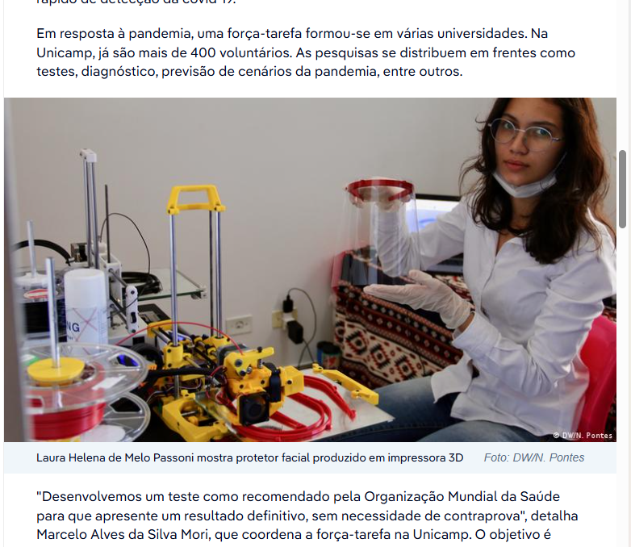
VAMOS CONVERSAR?